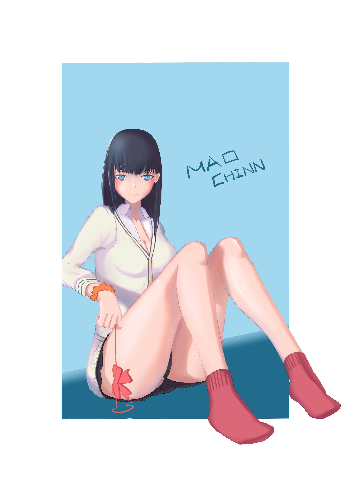

<div id="article_content" class="text-paragraph article_container">畫完都忘記PO惹<div><br></div><div>本體是腿，其他部分隨便就好(*ﾟ∀ﾟ*)</div><div></div><div><br></div><div>一天完成果然有點難掌握，只能把腿畫好=3=</div><div>這學期希望能產多一些圖，雖然要忙一些教學的事情</div><div><br></div><div>以上!</div><div><br></div><script>
$('article.c-text img').load(function () {
// 表格內圖片大於表格寬時，設為 100%
if ($(this).parents('table').length != 0) {
if ($(this).width() >= $(this).parents('td').width()) {
$(this).width('100%');
} else {
$(this).width($(this).width() + 'px');
}
}
});
</script></div>